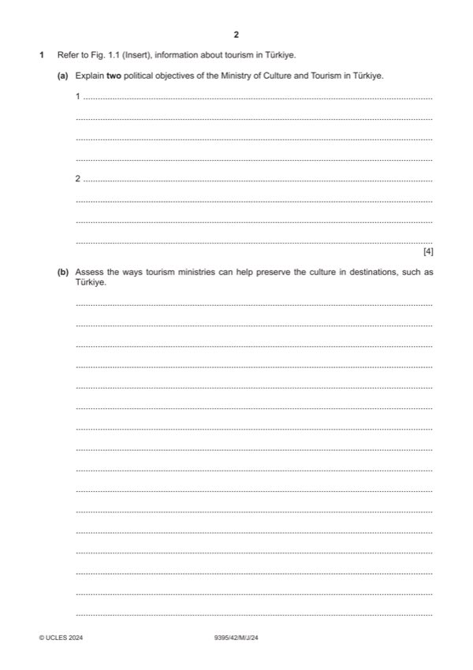

Question 1

Original paper page 2
Part 1(a) — solution
Explain two political objectives of the Ministry of Culture for Tourism in 4
Türkiye.
Award one mark for each of two identified reasons. Plus an additional mark
for an explanation.
Enhanced image [1] by promotional and marketing activities. [1]
Better reputation of the country [1] using arts and cultural events around the
world. [1]
Good international relations [1] including setting strategies and working with
other destinations to improve understanding. [1]
Marketing destination [1] through advertising and promotional efforts. [1]
Accept all valid responses.
Mark points
- Include the ideas shown in the solution above.
Part 1(b) — solution
- By having clear strategies
- Setting research and budgets
- Having clear priorities on culture
- Education
- Marketing
- Cultural activities bond the different generations and allows for cultural
- The community gain strength and importantly have belief in their abilities
- Vital social integration is developed. This allows greater mixing and
- A major benefit of these strategies is enhancing the preservation of
- The ministry may have to enforce certain rules and laws to protect the
- All strategies must be assessed according to budgets available. This is
Mark points
- By having clear strategies
- Setting research and budgets
- Having clear priorities on culture
- Education
- Marketing
- Cultural activities bond the different generations and allows for cultural
- The community gain strength and importantly have belief in their abilities
- Vital social integration is developed. This allows greater mixing and
- A major benefit of these strategies is enhancing the preservation of
- The ministry may have to enforce certain rules and laws to protect the
- All strategies must be assessed according to budgets available. This is
Part 1(c) — solution
- Safe and not dangerous to swim
- Clean environment
- Popular with holidaymakers and local people
- Easy to understand significance
- Marketing, reputation and image
- Healthy and natural environments are a draw for visitors and if they are
- Destinations are more attractive to different types of tourists if they
- Will give environmental importance to an area, this can help with
- Identification of a safe place to swim allows visitors to easily recognise
- A major significance of a Blue Flag beach award means that there is
- Tourists can be educated on the benefits of Blue Flag awards, and this
- Blue Flag emphasises the importance of protecting species to maintain
- Notably, the significance of the Blue Flag beach certification has
Mark points
- Safe and not dangerous to swim
- Clean environment
- Popular with holidaymakers and local people
- Easy to understand significance
- Marketing, reputation and image
- Healthy and natural environments are a draw for visitors and if they are
- Destinations are more attractive to different types of tourists if they
- Will give environmental importance to an area, this can help with
- Identification of a safe place to swim allows visitors to easily recognise
- A major significance of a Blue Flag beach award means that there is
- Tourists can be educated on the benefits of Blue Flag awards, and this
- Blue Flag emphasises the importance of protecting species to maintain
- Notably, the significance of the Blue Flag beach certification has